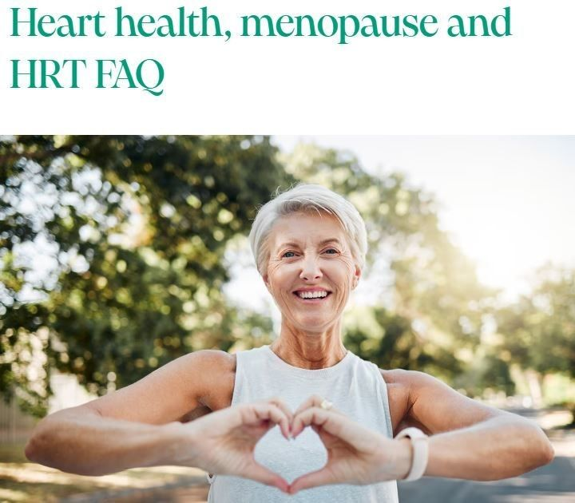
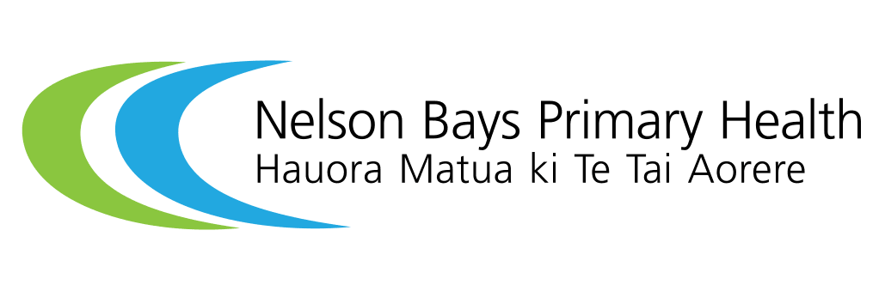
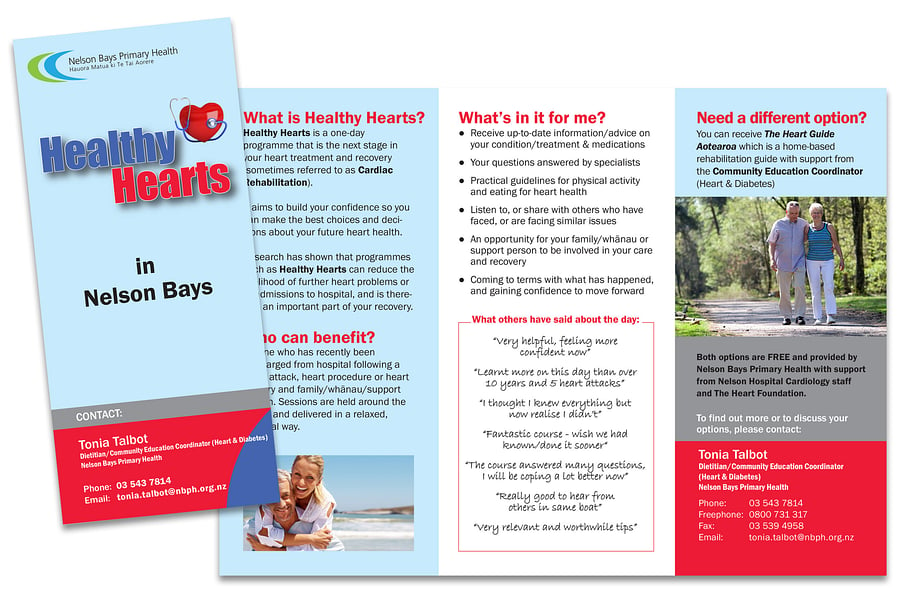

Heart health, menopause and HRT
Understand how hormones can affect your health and if HRT is suitable for you.
Dr Louise Newson BSc(Hons) MBChB(Hons) MRCP(UK) FRCGP — Founder, GP and Menopause Specialist.
Visit Dr Louise Newson's website
Worried about statin side effects?
People who are worried about statins because of possible side effects may experience what's called the "nocebo effect" when they try taking the drugs. This is the opposite of the placebo effect; with the nocebo effect, people who have negative expectations about medicine or a treatment experience harmful symptoms they otherwise wouldn't have.
Researchers recruited a large group of patients, average age 66, who had previously stopped statins after two weeks because of side effects. For one month each, they took 20 milligrams of atorvastatin (Lipitor), a placebo, or no pill. They then continued this monthly rotation for a year without knowing which pill was which.
The participants recorded their daily symptoms. Symptom scores ranged from zero (no symptoms) to 100 (extremely severe). People whose symptoms became too intense could discontinue the pill for that month. After a year, the researchers found that 90% of the symptoms people recorded when taking statins were also present when they took the placebo.
Once the group was shown these results and saw their nocebo response, half felt confident to restart statins and were able to tolerate them. This suggests that many people who have stopped taking a statin due to side effects might have been experiencing the "nocebo effect" and be able to resume statin treatment. The results were published Nov. 15, 2020, in The New England Journal of Medicine.

Healthy Hearts
Cardiac rehabilitation is a term used by health professionals; 'cardiac' refers to the heart and 'rehabilitation' means to restore health. The main goals of cardiac rehabilitation are to prevent you suffering further cardiovascular events by helping you take control and self-manage your condition, and to improve your quality of life.
Cardiac rehabilitation services provide you and your family with education, information, physical activity and social support with help from health professionals — including dieticians, cardiac nurses, pharmacists, physiotherapists, cardiologists, psychologists and others.
Healthy Hearts is a group information session that is part of your treatment and recovery following a heart event, often referred to as Cardiac Rehabilitation. Groups are reasonably small with 15–20 participants and delivered in a community venue e.g. a local hall.
This service will help you with: what has happened and why; understanding your risk factors; taking control of your future heart health; managing physical activity; making sense of cholesterol and blood pressure numbers; medications and symptom management; eating for heart health; and where to go for further support or information. It is also an opportunity for your family/whānau or support person to be involved in your care and recovery, and to listen to, or share with, others who have faced or are facing similar issues.
For more information: download the Healthy Hearts brochure, visit the website, or contact Tonia Talbot, Dietitian/Community Education Coordinator (Heart & Diabetes), Nelson Bays Primary Health. Phone: 03 543 7814 · Freephone: 0800 731 317 · Email: tonia.talbot@nbph.org.nz
Download brochure (PDF)A New Lease of Life — patient information video
Have you had a heart attack? Or a heart procedure — PCI or surgery? Do you feel isolated and are struggling to get to grips with life again? This video documents the experiences of patients following a major heart event. It is produced by the Cardiology Department of Nelson and Wairau Hospitals and is supported by the New Zealand Heart Foundation.
Watch the video
Your Lifestyle Medics
Deep down, we all want good health. But in a world of overwhelming wellness info and changing diet trends, it can be hard to know where to start and who to believe. That's why we've created our new online Lifestyle Medicine course, Reboot Your Health! It's a total health transformation package, designed to help you change your life, empower you to take charge of your own well-being, and teach you all you need to know to become a happier healthier you. And best of all, it's fully backed up by cutting edge research.
We are both practicing Lifestyle Medicine medical doctors, and love teaching people the vital concepts of well-being, and how to feel their best. Our passion is to empower you to take control of your own health — using scientifically proven, safe, sustainable strategies that really work.
Lifestyle Medics websiteShock Absorbers
After the coming together of a group of patients with implantable defibrillators (ICDs) who call themselves "Shock Absorbers", it was decided that they should start a Facebook group for people with ICDs (and their families/loved ones) so they can chat amongst themselves. It is a closed group so that only approved members can see or post.
Our lead technician for ICDs has opened it up to all Kiwis with ICDs (and now there are members from Australia and the UK). Adele Clayton is co-admin of the group — not only is she an ICD Specialist Nurse at North Shore Hospital but she has an ICD herself, as do all four of her teen and adult children.
If you would like to join, click the "Shock Absorbers" link below and request to join.
Visit Facebook page